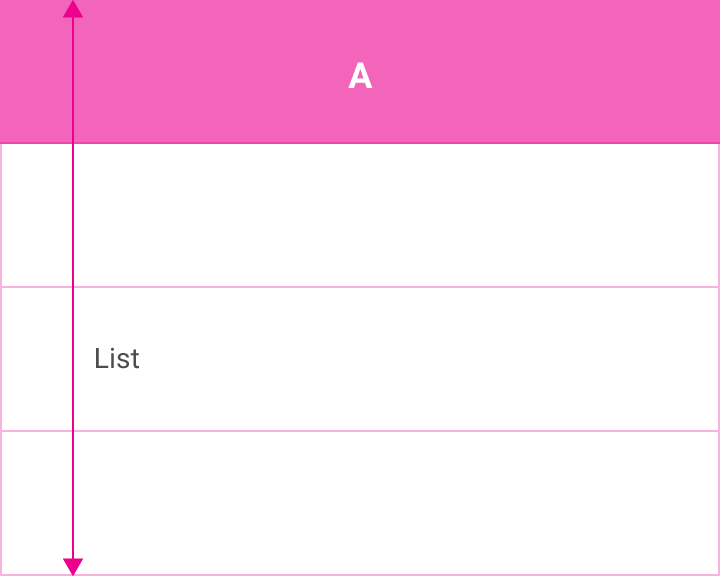
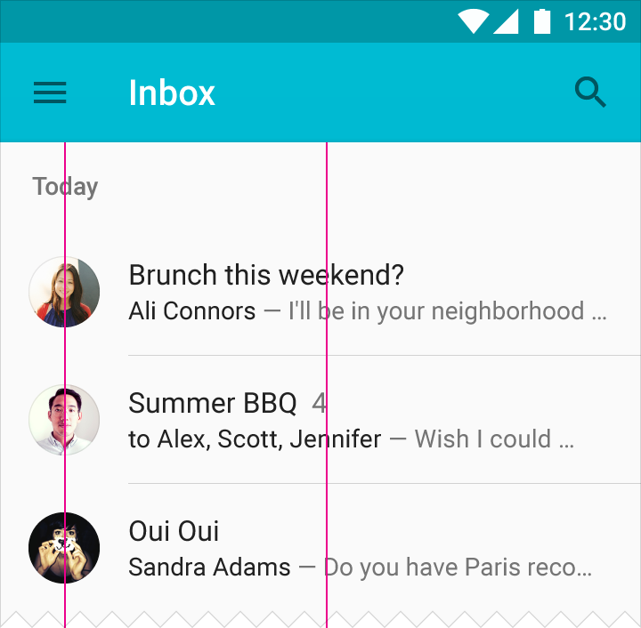

리스트는 타일을 위한 컨테이너 기능을 하는 행이라고 불리는 동일 너비의 모자이크식 하위 분할의 단일 연속 열로 구성됩니다.
타일은 내용물을 계속 가지고 있으며 리스트 내에서 높이가 다양할 수 있습니다.

리스트
행과 타일
리스트는 균일한 데이터 유형이나 이미지와 텍스트 같은 데이터 유형의 집합을 나타내기에 알맞습니다. 이것은 유사한 데이터 유형 사이나 단일 데이터 유형 내에 특성 사이를 구분 짓는 반면 읽기 이해력에 최적화되어 있습니다.
리스트 대체자:
- 텍스트 세 줄 이상이 리스트 타일에서 표시될 필요가 있다면, 카드를 대신 사용하십시오.
- 주된 특징 내용물이 이미지로 구성되어 있다면, 그리드 리스트를 사용하십시오.
밀도
마우스와 키보드가 주된 입력 방법일 때, 치수는 더 밀집한 레이아웃을 수용하기 위해 축소될 것입니다.

일반적인 리스트 훑어 보기 패턴